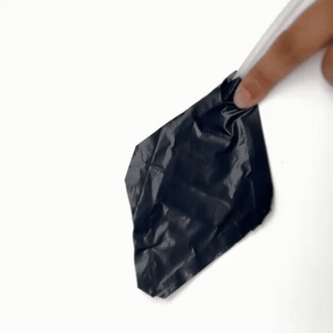
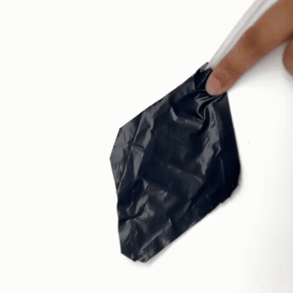

Squid skins showcase fascinating behavior. As a response to the external environment, they can camouflage. This behavior is a result of color-packets that are present on their skin, known as chromatophores. These packets expand and contract, and the result is color change. Color change and shape change are the two behaviors that have fascinated me.
The question asked during the study: How might we induce the shape-changing ability in various materials as a result of simple geometric patterns and cuts on the material? Also looking at air as a medium for shape change.

 

Huggable Air
People are subjected to stressful situations, and calming human touch such as a hug plays a significant role in releasing some of the stress. How might we apply our transformable inflatable system to generate empathetic form and space?
Inflatable systems are soft, lightweight, and squishy. Can we recreate human touch with these?